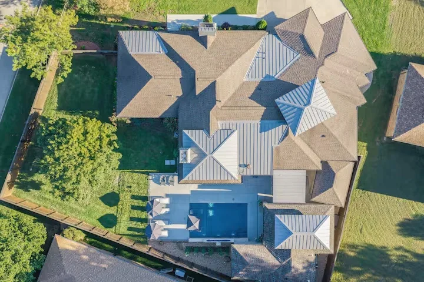
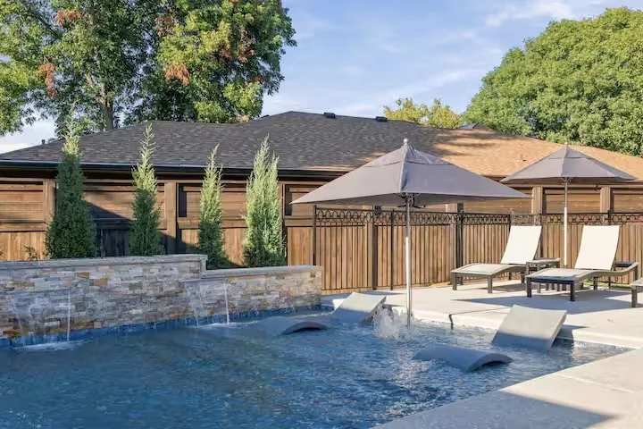
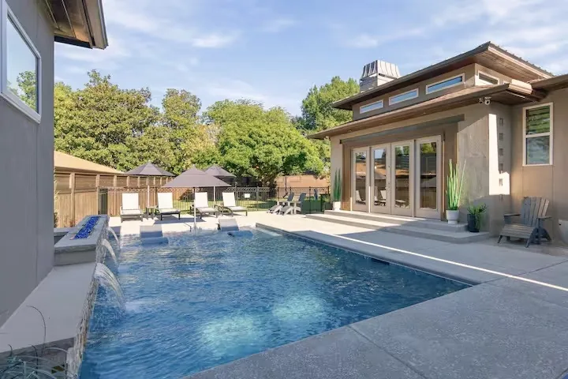
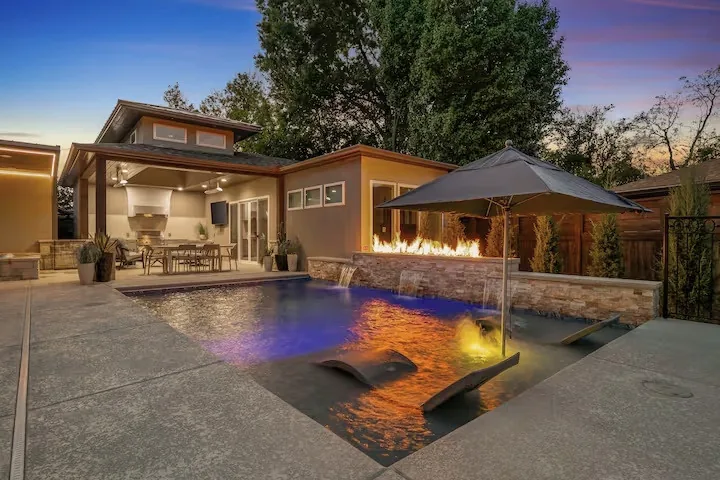
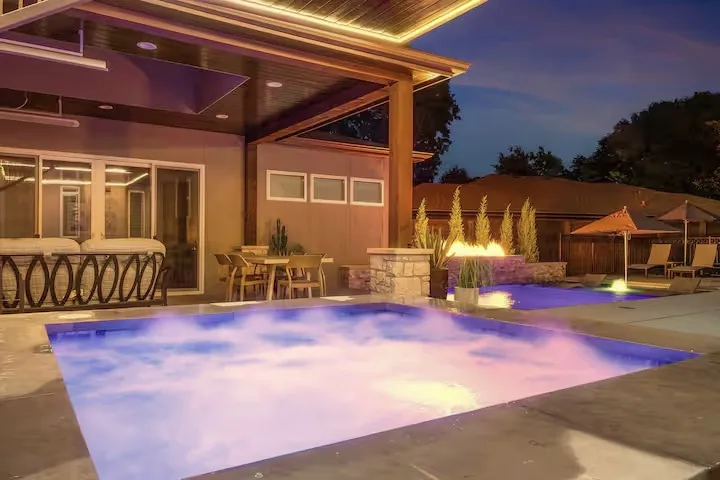
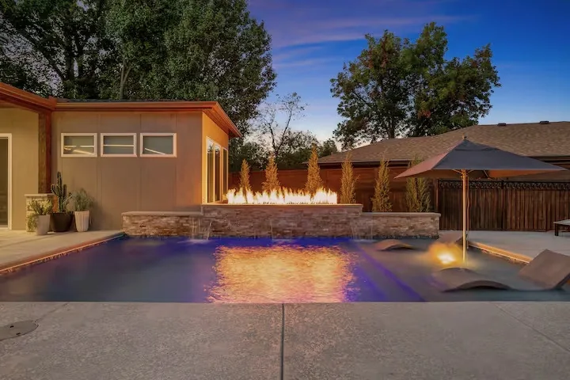
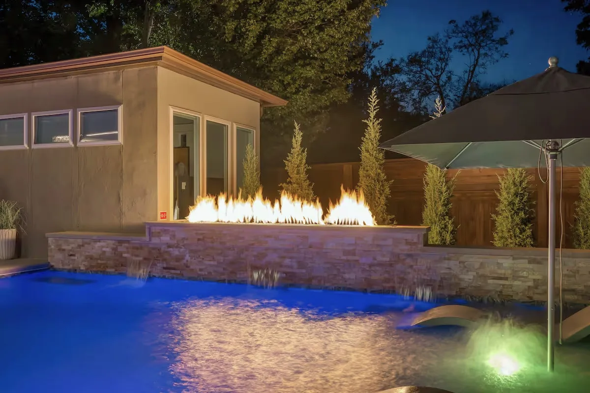
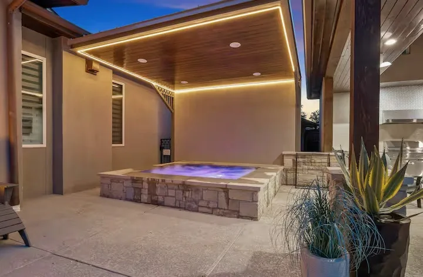

Collins / Project 01
a Minor Key
9 photographs. One backyard.
Tap a photo for a closer look.

















Collins / Project 01
9 photographs. One backyard.
Tap a photo for a closer look.







